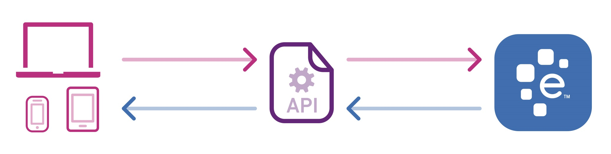

Использование API сервисов при разработке сайтов
Что такое API?
API (Application Programming Interface) — это набор правил и протоколов, которые позволяют различным программам взаимодействовать друг с другом. API определяет, как компоненты программного обеспечения должны взаимодействовать, предоставляя инструкции для запросов и ответов.
API могут быть использованы для различных целей, таких как:
- Интеграция с другими сервисами
- Получение данных из внешних источников
- Автоматизация задач
- Расширение функциональности приложений
API могут быть как открытыми (публичными), так и закрытыми (частными). Открытые API доступны для всех разработчиков, в то время как закрытые API используются внутри компании или для ограниченного круга пользователей.